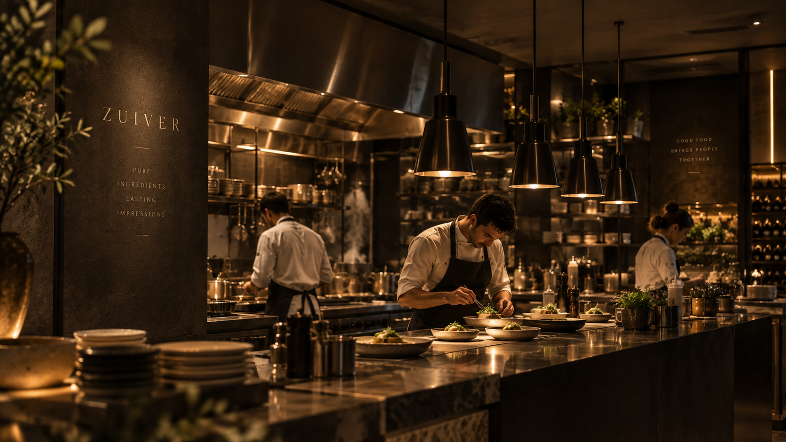
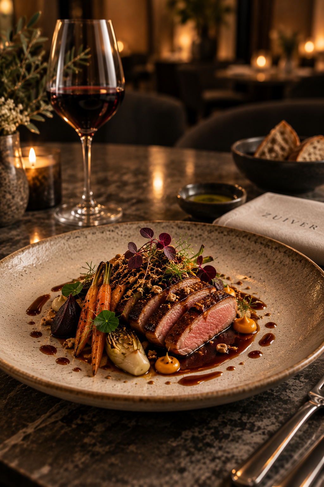
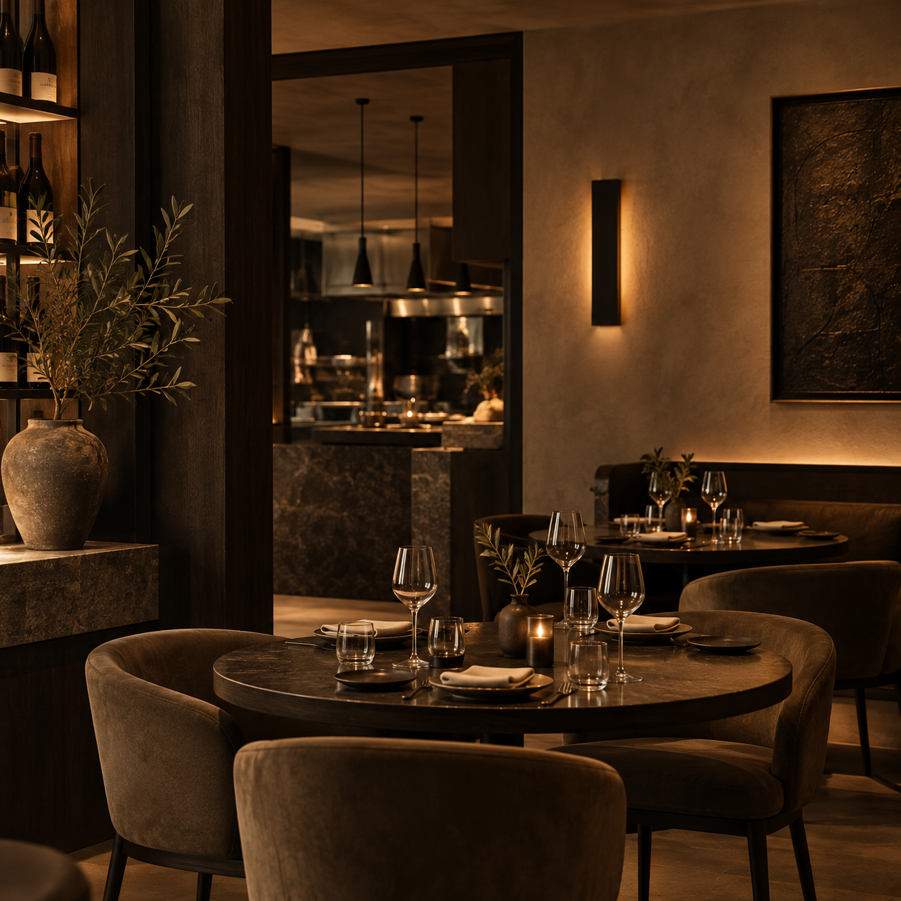
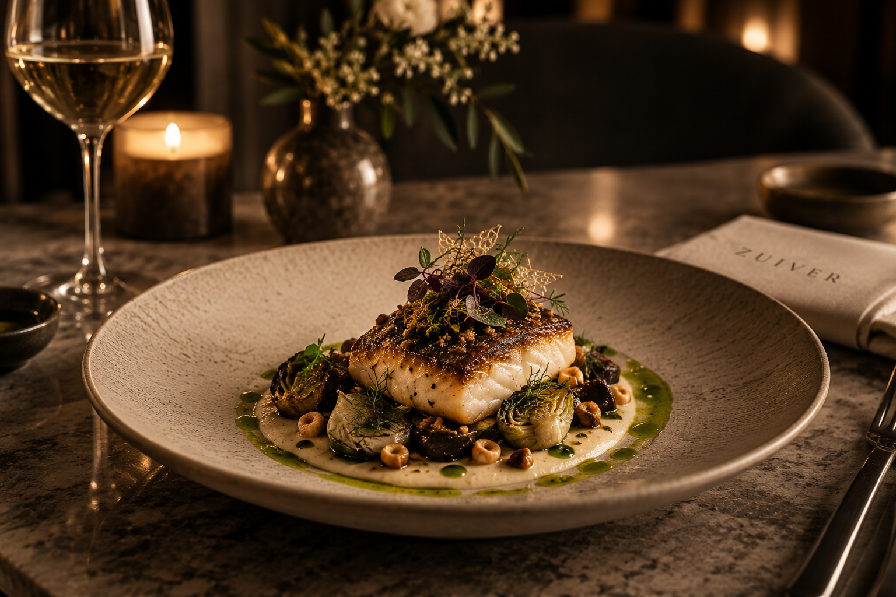
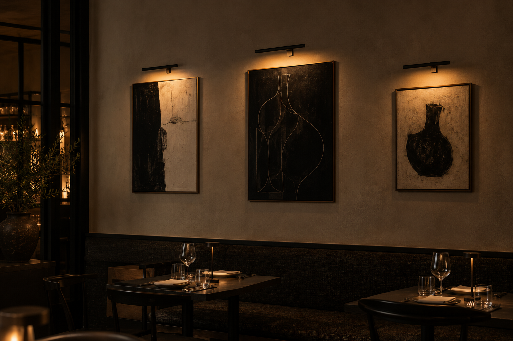
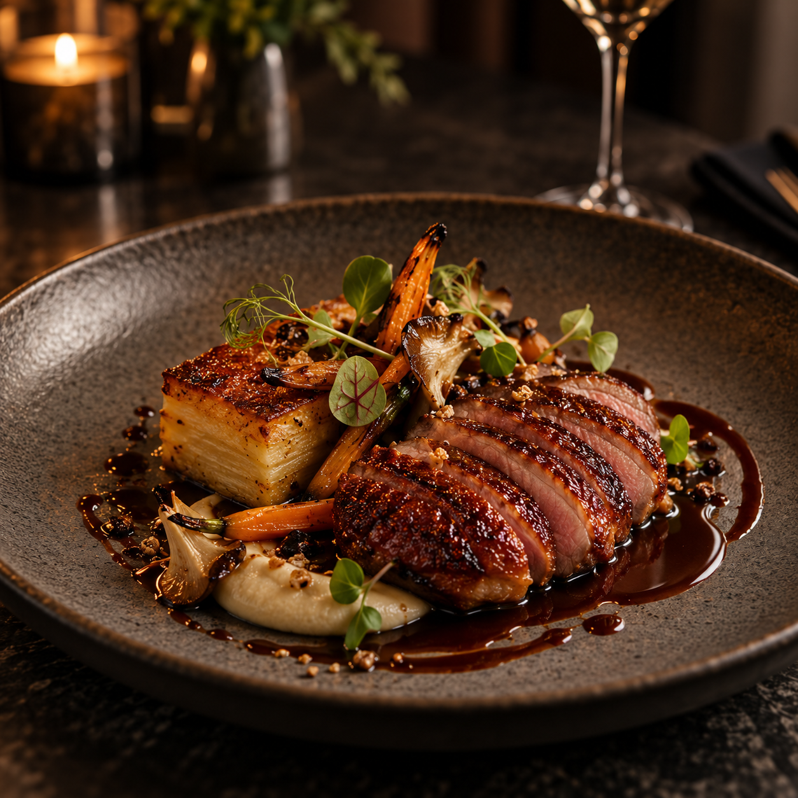
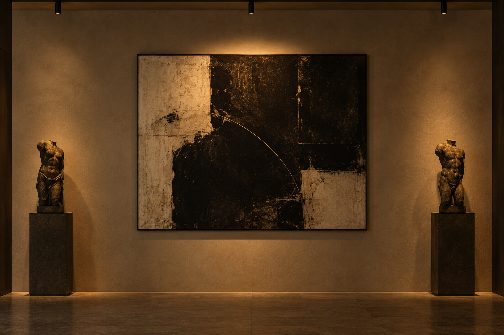
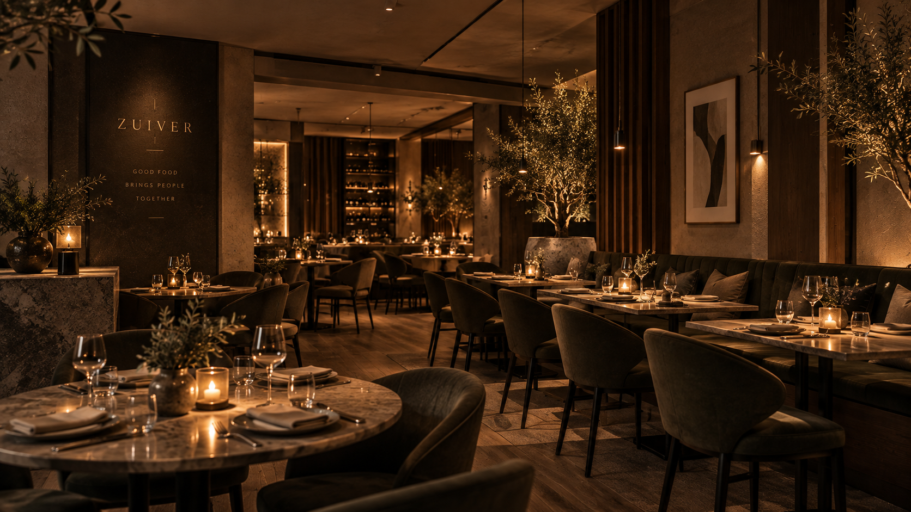

Zuiver restaurant — pure ingredients, lasting impressions.







The essence of Zuiver
Heritage
Our story begins with a simple belief: good food brings people together. Rooted in the seasons and a love of honest ingredients, Zuiver celebrates the beauty of simplicity.
Pure in spirit. Rich in experience.03 / The art of simplicity
Less noise.
More soul.
We believe the most memorable evenings are found in the smallest details. The warmth of a welcome. The first pour. A dish that feels both familiar and entirely new.
Thoughtfully sourced. Carefully prepared.
Always, unmistakably, Zuiver.

Stay a little longer
Some evenings
stay with you.
A first taste. A last glass. A moment of your own.
04 / You’re invited
Ghent, Belgium
Your table
awaits.
For quiet celebrations, long conversations,
and the simple pleasure of being together.
Bring good company.
We’ll take care of the rest.
Make an evening of it.
Sint-Pietersnieuwstraat 12
9000 Ghent, Belgium
Seasonal cuisine.
Thoughtfully served.